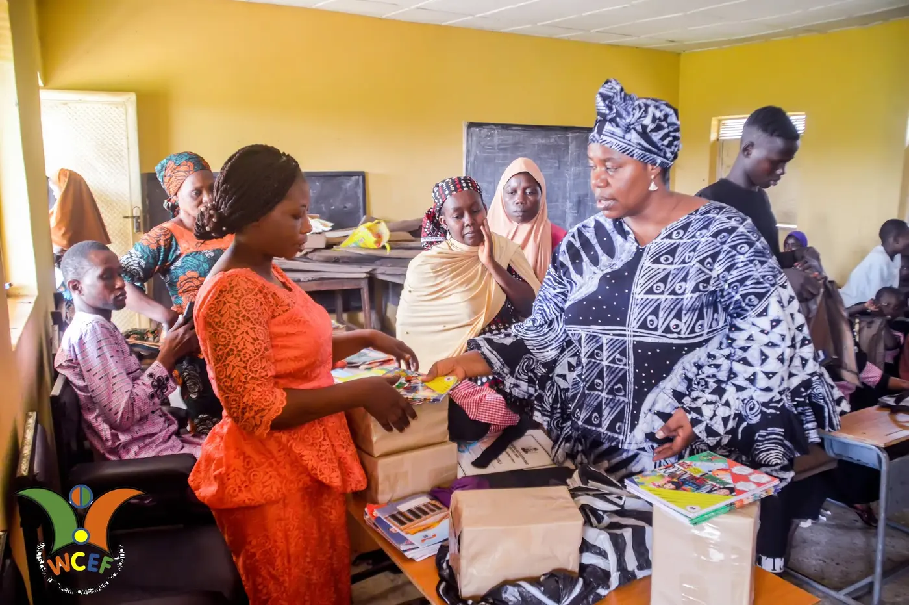

Founder · Board of Trustees
Princess Bridget Tola Ogundipe
Leads the Foundation's vision to restore dignity, safety and opportunity to women, children and widows across rural Nigeria.

Leadership
A Board responsible for the strategic direction and fiduciary accountability that donors, partners and communities can trust.
Founder · Board of Trustees
Leads the Foundation's vision to restore dignity, safety and opportunity to women, children and widows across rural Nigeria.
Co-founder
Supports strategic direction and operational guidance, helping anchor the Foundation's grassroots programmes in sound governance.
Patron
Provides patronage that lends cultural legitimacy and community standing to the Foundation's work in reaching underserved populations.
Fuller biographies for each board member can be added here as they become available. If you have additional details about the team, share them and we will expand these profiles.
Fiduciary accountability
An appointed Board of Trustees oversees strategic direction and fiduciary responsibility — underpinned by federal incorporation and full regulatory compliance.
View compliance & certificates →3
Regulatory certifications
2023
Year incorporated
RC
7007514
SCUML
SC 301401186
Your contribution is stewarded by a compliant, accountable board — and reaches the communities that need it most.
Donate Now